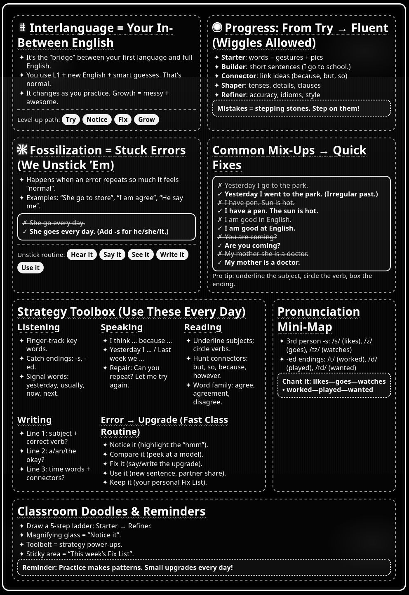

In my practice, I demonstrate an understanding of English as an interconnected system—phonology, morphology, syntax, semantics, and pragmatics—and use that understanding to support ELLs' language and literacy development for success in content areas.
| Language Component | Instructional Approach | Example Evidence |
|---|---|---|
| Phonology | To teach English phoneme–grapheme correspondences and prosody (stress, rhythm, intonation) to improve decoding and intelligibility. | minimal-pair drills for /ɪ/ vs. /iː/; sentence stress activities to support listening comprehension in science lectures. |
| Morphology | To integrate instruction on inflectional and derivational morphology to boost vocabulary depth and reading fluency. | affix notebooks (re-, un-, -tion, -ity) tied to academic word lists; morpheme word-building games aligned to content texts. |
| Syntax | To scaffold complex sentence construction to support academic language. | sentence frames and transformation tasks (simple → compound/complex), relative clause expansion in social studies summaries. |
| Semantics | To teach word relationships and academic vocabulary using semantic mapping and corpus-informed examples. | concept maps for polysemous words (e.g., "charge" in science vs. finance), collocation practice for discipline-specific phrases. |
| Pragmatics | To model register, discourse markers, and speech acts for various contexts. | email etiquette role-plays (requests, hedging), discussion stems for agreeing/disagreeing in seminars. |
Impact on achievement: These system-focused routines are embedded in content tasks (e.g., lab reports, DBQs, math explanations), improving accuracy, comprehensibility, and the ability to access grade-level texts and tasks.
TESOL teachers know that language is more than grammar.TESOL teachers create several activities, resources and lessons to help English learners understand how the linguistic systems of spoken language work together to create meaning.
The chart was designed for families as a course assignment (see Appendix)
| Goals | Principles |
|---|---|
|
|
| Stage | Time | Description |
|---|---|---|
| Warm-up/Activate schema | 3–5 min | micro-task using visuals or a prompt. |
| Input and noticing | 8–10 min | short text/audio with guided highlighting of target forms. |
| Guided practice | 10–15 min | controlled-to-meaningful practice (e.g., sentence frames → information gap). |
| Communicative task | 12–20 min | pair/group problem-solving or content-aligned task. |
| Feedback and focus on form | 5–8 min | brief, targeted feedback on patterns. |
| Exit check | 2–3 min | micro-assessment (e.g., one-minute write, voice note). |
| Method | Definition | Example Use |
|---|---|---|
| Communicative Language Teaching (CLT) | Prioritizes communication of meaning and real-world tasks; accuracy develops through use. | Adults, online or in-class—role-plays (doctor–patient), info gaps using breakout rooms; measure by task success and comprehensibility. |
| Task-Based Language Teaching (TBLT) | Learners complete a real task with a clear outcome; language focus follows performance. | Online adult ESL—plan a trip with constraints (budget, time); post-task focus on past tense and quantifiers from learner output. |
| Content and Language Integrated Learning (CLIL)/Sheltered Instruction | Teach content and language together with supports (visuals, scaffolds). | Secondary science—lab write-up with sentence frames for cause/effect; online class uses interactive simulations and labeled diagrams. |
| Sheltered Instruction Observation Protocol (SIOP) | Structured model with 8 components (prep, building background, comprehensible input, strategies, interaction, practice, delivery, review/assessment). | Lesson on earthquakes with clear content and language objectives; vocabulary pre-teach, chunked reading, structured discussion, quick exit ticket. |
| The Lexical Approach | Focuses on high-frequency chunks and collocations as building blocks of fluency. | 1:1 business ESL—collocation banks ("meet a deadline," "raise capital"), spaced retrieval via digital flashcards; short output tasks using target chunks. |
| Focus on Form (Long) | Brief, reactive or planned attention to form that arises in meaningful communication. | During debates, pause to highlight hedging ("It appears that…") or article use; quick recasts and clarification requests. |
| Audio-Lingual Method (ALM) elements (selective use) | Pattern drills for pronunciation/automatization. | Pronunciation warm-ups for minimal pairs; choral repetition in beginner online groups to build confidence, followed by communicative use. |
| Total Physical Response (TPR) | Pair language with physical actions to reduce cognitive load, especially for beginners. | Young/low-level learners—TPR commands ("open the file," "drag the icon") in tech onboarding; camera-on demonstrations online. |
| Project-Based Learning (PBL) | Extended, inquiry-based projects culminating in a product/presentation. | Adults—community needs survey leading to a proposal; language targets: question formation, modal verbs, presentation skills. |
| Cooperative Learning (e.g., Jigsaw) | Structured interdependence; learners teach each other parts of content. | Online jigsaw reading—each breakout group studies a subtopic, reconvenes to synthesize; assign roles and sentence stems. |
| Genre-Based Pedagogy (Sydney School) | Teach stages and language features of academic/professional genres explicitly. | Write a problem–solution essay; deconstruct mentor texts, jointly construct, then independent write; focus on cohesion and stance. |
| The Direct Method (elements) | Target-language only, inductive grammar, meaning via context/visuals. | 1:1 conversation lessons—realia and images to elicit target lexis; delayed explicit rule summary. |
| Universal Design for Learning (UDL) in ESL | Multiple means of engagement, representation, and expression. | Offer text+audio, glossed vocabulary, and choice of response (voice note or paragraph); helpful in mixed-ability online classes. |
| Strategy-Based Instruction (SBI) | Explicitly teach learning strategies (metacognitive, cognitive, socio-affective). | Adults—note-taking templates for lectures; think-alouds for inference; reflection logs on strategy effectiveness. |
| Data-Driven Learning (DDL)/Corpus-Informed Teaching | Learners explore authentic language patterns using concordance data. | Advanced EAP—use online corpora to compare "on the other hand" vs. "by contrast"; build collocation lists for discipline-specific writing. |
| Translanguaging/Pedagogical L1 Use | Purposeful use of learners' full linguistic repertoires to support L2 learning. | Prewriting brainstorm in L1, then recast to English; bilingual glossaries; compare discourse markers across languages. |
| Noticing and Input Enhancement | Make target forms salient in input to trigger noticing. | Color-highlighted passive voice in lab reports; learners annotate and then paraphrase. |
| Form-Focused Instruction (FFI) – Planned | Short, explicit mini-lessons on target forms integrated into communicative syllabus. | Ten-minute mini-lesson on articles with count/noncount nouns before a shopping role-play. |
| Pronunciation/Prosody-Based Instruction | Explicit teaching of segmentals and suprasegmentals for intelligibility. | Adults online—record-and-compare shadowing; thought-group chunking for presentations. |
| Assessment for Learning (AfL) in ESL | Ongoing, low-stakes checks with actionable feedback. | Weekly can-do checklists; error logs categorized by form (tense, articles, word choice) with goals for the next task. |
I can use [target structure] to [communicative function] in [context].
Examples:
I can use cause–effect connectors (so, therefore, as a result) to explain a science process in a paragraph.
I can use past simple vs. present perfect to describe work experience in an interview.
I can use hedging (might, appears to) to present claims in a discussion.